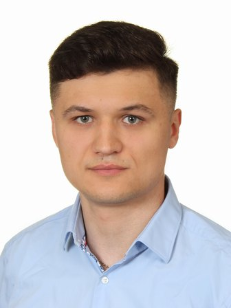
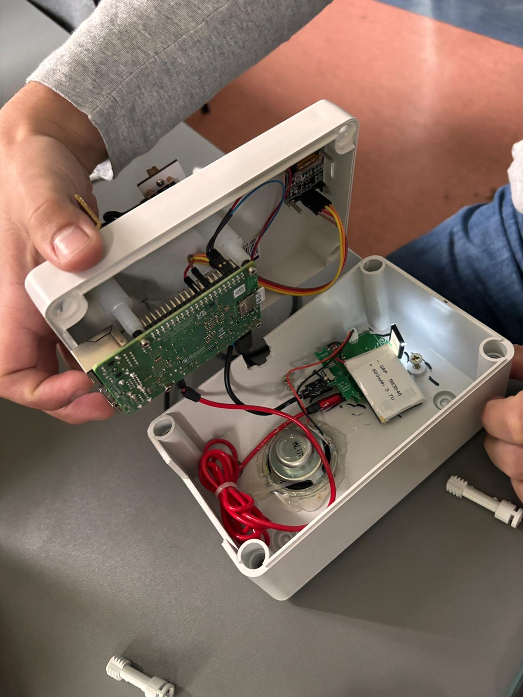

Koordynator ds. zaopatrzenia i sprzedaży
FISHKA — Market Zoologiczno-Wędkarski
- Obsługa platform zakupowych B2B
- Zamówienia i stany magazynowe
- Cenniki i dane od dostawców w Excelu
- Obsługa klientów i kontakt z dostawcami
Lubię pracować z ludźmi i pomagać im zrozumieć technologię. W rozmowie z klientem zależy mi na tym, żeby poznać jego potrzeby i jasno wyjaśnić dostępne możliwości. Chcę rozwijać się w konsultingu IT lub wdrażaniu systemów, gdzie mogę połączyć ten sposób pracy z zainteresowaniem bazami danych i SQL.
Studiuję informatykę na II stopniu i pracuję przy zaopatrzeniu oraz sprzedaży. Na co dzień rozmawiam z klientami i dostawcami, porównuję oferty i szukam rozwiązań dopasowanych do potrzeb. Lubię analizować, co sprawdzi się najlepiej, jakie ma ograniczenia i czy jest warte swojej ceny.
Gdy coś nie działa, staram się zrozumieć przyczynę. Szukam informacji w dokumentacji i na forach, sprawdzam różne podejścia i wyciągam wnioski z kolejnych prób. Satysfakcję daje mi znalezienie rozwiązania, które przywraca coś do działania lub ułatwia komuś codzienną pracę.


obejrzyj demoRozpoznawanie 52 kart w czasie rzeczywistym na Raspberry Pi 4. Dostrojony model YOLOv8n, kamera w trybie mono i polski asystent głosowy, który odczytuje każdą kartę — cała inferencja lokalnie, bez chmury. Mój obszar: wdrożenie na Raspberry Pi i pipeline rozpoznawania.
SQL to obszar, w którym czuję się najpewniej — wiedzę rozwijam na studiach i we własnej praktyce. Power BI poznaję, a w Pythonie uczę się podstaw.
Narzędzia AI wykorzystuję do analizy informacji, nauki oraz tworzenia stron i aplikacji. Z ich pomocą stworzyłem aplikację desktopową do monitorowania drukarek i ewidencji konserwacji komputerów, która trafiła do użytku w firmie.
Bardzo dobrze znam Microsoft 365 i korzystam z niego w codziennej pracy. W Excelu pracuję z cennikami i danymi od dostawców, a pozostałe narzędzia wykorzystuję do dokumentów i komunikacji.
Podczas stażu zaprojektowałem od podstaw stronę internetową w Figmie, która spotkała się z pozytywnym odbiorem w firmie. Rozwijam też własne portfolio w HTML, CSS i JavaScript, korzystając z narzędzi AI.
Na stażu przygotowywałem stanowiska, konfigurowałem sprzęt i pomagałem użytkownikom rozwiązywać problemy. Pracowałem również przy utrzymaniu sieci zakładu, wykorzystując wiedzę ze studiów o specjalności bezpieczeństwo sieci.
Na studiach magisterskich rozwijam wiedzę o uczeniu maszynowym. Interesuje mnie dobór metod do problemu, przygotowanie danych i ocena wyników modeli.